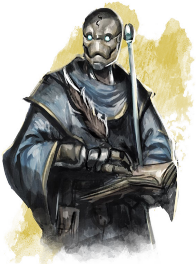

作为一位战俑，你的身躯诞生于卡尼斯家族熔炉中。创造熔炉在金属和乌木的骨架上将根须状的肌肉织就，以炼金术溶液沐浴你的身躯，再以钢铁或硬化的皮革为你做成外皮。然后奇迹发生了：你获得了生命。你由木头和钢铁制作而成，但你却是鲜活的生命，你有自我意识，能切身感受到爱与愤怒。你有着与生俱来的使命感，战争的知识深深铭刻在你的脑中。但你并非一定要遵循创造者为你规划的道路。你有自由，有学习的能力。也许还有灵魂。
作为战俑，你出于某个目的被创造出来——那是什么？你如何找到新的目标并成为了一位冒险者？你希望从现在的生活中获得什么？你是否心系战俑族裔的命运，或是你和冒险伙伴比和自己战俑同胞待在一起时感到更为亲切？

起源与目的Origin and Purpose
最初的战俑作为战争兵器被制造出来。随着卡尼斯家族的技术越发精进，一开始简单的步兵被更加复杂的设计所取代：具有秘银外层的轻捷斥候，强而有力的金刚，甚至操纵着术士力量的“活体魔杖”。随着人们越来越习惯于这些活着的构装生物，卡尼斯家族开始设计出具有各式各样天赋的民用战俑。
作为战俑，你具有学习的能力，而你的背景和职业特性正能反映出这一点。如果你是一位战俑吟游诗人，你是为了娱乐而创造出来，还是你出生时只是一台简单的工人战俑，但却发现自己有着特别的天赋？如果你是一位术士，你是背上设计作能够引导奥术能量，还是你的魔法来自于一项设计之外的进化？你可以从以下选项中决定自己的起源，然后思考它和你如今的样子有着怎样的关联。
战地Battlefield
和大多数战俑一样，你被设计为在终末战争中服役。你并没有选择自己的阵营；你被卖到五国之一的军队中，并开始工作。你从未被教导过去质疑这一角色——战争是你唯一所知的目的。一些战俑开始对他们服役的国家产生爱国主义的归属感，进而蔑视他们所交战的敌人。其他一些战俑则和他们一同服役的军官和士兵们产生了密切的感情，他们是在为这个“家庭”，而非国家而战斗。你又是如何呢？你曾经为哪个国家耳中？你认为自己是一个瑟雷恩人还是赛尔人，还是你对那个买下你并将你扔到前线的国家毫无眷恋之情？
战俑们在终末战争的最后三十年间服役。你服役了多长时间？你最为戏剧性的经历是什么？战斗是否给你留下了挥之不去的疤痕或伤痛，即使它们并未对你的角色造成规则上的影响？
对许多战俑来说，职业能力翻译了你在战场上扮演的角色。作为一位战士，你可能是在先锋部队中奋战。作为游侠或游荡者，你可能被设计为一台斥候。一位战俑野蛮人的狂暴可能反应了一种“战斗模式”——你并没有真的陷入愤怒，但你暂时提升了自己造成的伤害和抗性。随着时间推移而逐渐获得的职业能力可能反应了设计中当你释放自己全部潜能时的进化——对你来说是否如此，还是你发展出了设计之外的天赋？
民间Civilian
在终末战争的最后十年间，卡尼斯家族开始出售战俑给民间组织。这并非十分普及的服务；一位农夫无法只是走到商店里然后将一台战俑带回家中。但你可以曾经为一个龙纹家族服务，为一个贵族家庭担任家教或保镖，或者甚至设计来作为一个犯罪组织的执行者。这条道路提供了许多可能的背景和非同寻常的故事。如果你选择了贵族背景，这并不意味着你一定要有自己的贵族头衔——你可以作为一位深受信赖的贵族保镖，一直被视作这个家族的一份子。也许一位贵族将你作为他们的继子，这样的故事可能前所未有，但可能会是一个有趣的故事！如果你具有民间英雄背景，你可能是某个特定城镇的守护者，而你的英勇行径则广为流传。
作为一台民间战俑，你的职业是反映了你最初的制造目的，还是你在之外找到了别的道路？比如说，你可能具有智者背景作为你原本是一位家教或研究者的设定。你并未被制造为一位法师战俑——但在你的职业过程中，你开始逐渐掌握了魔法的奥秘，远远超出你的创造者希望的程度。在战场上服役的战俑们在战争结束之后被迫开始寻找新的生活。而你并非为战争而生，终末战争的结束对你是否有着大的影响？王座堡协约解除了你任何形式的从属关系，但你是否仍然感到对你服务的家族或城镇的归属感？你是否对一个国家有过忠诚，或者你的世界观一直都由和你一同工作的人们塑造？
专用还是独特？Specialized or Unique
战场上的战俑大部分是批量生产。但仍然有许多小批次的实验性战俑，使用了特别的设计或实验性的技术。也许你的战俑游荡者是一支从未部署过的秘密暗杀队伍的一份子；这支队伍中有多少战俑，而他们如今安在？作为一位战俑艺人，你是否被作为一位超级巨星而设计——如果如此，费奥兰家族对此有着怎样的看法？作为一位德鲁伊，你是否找到了和自然世界的内在联系，还是说一位古怪的奇械师为你设计了改变形态和与自然生物沟通的可能性？
在完善一位奇怪的战俑角色时，你可以和DM商量完善关于你创造者和目的的细节。你是否是小批次生产的样品或者一部分？你知晓谁创造了你，又是出于怎样的目的，还是说你诞生的真实目的即使对你来说也至今仍是一个谜。
心与形Mind and Body
卡尼斯家族的奇械师设计出你的身躯，并出于某个目的将你创造出来。当创造熔炉为你注入生命时，你就已经知晓了一些事情。如果你被创造为一位战士，你就生而知道如何挥舞利剑和长矛。你对团队作战有着本能的直觉。卡尼斯的教导者们的确教给了你一些事情，但那也像是是在提醒你一些你早已熟知的东西。
这是战俑身上的未解之谜之一。你的智能从何而来？卡尼斯家族给了你放心，但他们并未设计出你的心智；如果他们可以做到，他们会将你变成毫无感情、甚至很可能没有独立意识的机械。许多奥术学者的理论中说，创造熔炉并没有创造出战俑的心智，而是召来了它。一些人认为战俑的灵魂是从其他位面召唤而来，一位战俑士兵是被注入了萨弗拉斯位面存在的灵魂。而其他人则推测创造熔炉可能是回收了杜鲁尔位面的残魂...也许你有时感觉记得某个新的技能时因为你在前世便掌握了这一技艺。
无论如何，你的卡尼斯导师们只会教导你仅专注于他们设定的目标，他们训练你抑制自己的情感，成为武器或者工具。而现在你获得了自由，可以充分发挥自己的潜力。这对你来说意味着什么？你能完整感受到所有的情绪，但你是否会去用心感受它们？你是否为愤怒和爱所迷惑了心智？什么才是你真正在意的东西？你是否能对某个特定的人感到忠诚？还是你的忠诚属于一个国家？或是属于战俑种族的未来？一些战俑陶醉于选择新的道路的能力，而另一些则坚持着他们原本的设计意图，只是因为想让这些技能发挥作用。
进化Evolution
战俑并非机器；他们是活着的魔法生物，其肉体和精神皆可获得进化的飞跃。就像你能习得一项新的技能一样，你的身体在经年累月中也会改变形态。这是一种反映职业获得增益的方式；你能想到改变身体的方式来适应新的能力的方式么？如果你获得防御战斗风格，这可能反映为你的天生盔甲越发厚重。如果你是一位战俑术士，，你获得的新施法能力可能会反映为你身上出现的奥术符号，或是能投射光芒和能量的生长水晶。永远不要忘记你自己是魔法和科学的产物。你的身躯可能由金属或皮革制成，但你仍然是活着的生物。
内置护甲Integrated Protection
作为战俑，你的护甲时身体的一部分。你的皮肤是金属或皮革，与作为你肌肉的根状触须物理相连。尽管你可能能更换你的护甲，但很少有战俑会真的这样做。这一过程看上去类似人类蜕下自己的皮肤；尽管对战俑并无危险，但这是个令战俑不安和不适的过程。作为一位冒险者战俑，这对你来说是一项重要的能力，它能让你提升防御并利用魔法护甲。但在更换护甲时，你得考虑到你正在做的是多么严肃的事情。
一旦你将一套护甲作为内置护甲，它便无法违背你的意愿被去除。无论如何，你对防御战斗风格或其他专长和增益而言始终视作穿着护甲。此外，内置护甲可以被魔法效应指定。第六章中的金刚护甲专长增强了你的内置护甲并能保护其不受敌对魔法的影响。
内置工具Integrated Tools
就像战俑能搭载武器和护甲一样，他们也能将工具装在自己身体之中。有两种方法能做到这一点。第一种是得到一件内置工具integrated tool。如第七章中所示，这是一件需要同调的普通魔法物品，通过与它同调，你能将它与自己的身体相连。另一种是获得第六章中的特使专精专长。这能让你获得相关工具的好处而不需要与物品同调。
和臂刃armblade不同，一件内置工具integrated tool不止是一柄与你手臂相连的锤子那么简单。大部分工具并不是单单一件的物品，而是一系列的小工具的集合。你如何使用它们？如果你有一套内置的盗贼工具，你是否能将自己的手指当做开锁器使用？或者你能从前臂的夹层里拿出需要的各种工具？如果你有一套内置工具，它是安装在你的手臂还是身体里？无论你作何选择，你都必须记住你得需要有一只空出的手来说使用内置的工具。你可以说你的胸膛中埋入了一架风笛，但你仍然需要空出一只手来演奏它们。
一件内置工具可以是角色概念的一个有趣部分，它能反映出战俑被制造的目的。一位战俑化外之民可能一套安装在她身体中的制图工具；她被作为一位探索者设计出来，能够使用内置工具和天生的方向感来不断完善自己的地图。一位内置着长笛的战俑艺人会是一个令人印象深刻的形象。在这两种情况下，它们都不是战俑后天获得的工具，而是最初设计的一部分。如果你有一个有趣的起源故事，你可以征求DM的许可将角色创造时获得一件工具作为内置工具。如果不行，内置工具本身是一件普通魔法物品，在你的冒险之中也能轻松地获得。
战俑人设Warforges Concept
创造一位战俑角色时，最简单的开始是：你在战争期间做了什么？当战争结束时，你又获得了什么样的改变？你选择了你如今的道路，还是你被设计为成为现在的样子？第六章中包括了两种战俑可能会探索的子职。超体宗战俑武僧的能力可能反映为肉体进化和武术训练的结合。而铸形结社则是一条德鲁伊之路，能让你作为木头和铁石的生物探索与自然的联结。这里也有一些其他不寻常的人设概念。
神之器The Divine Tool
你是由人类之手创造的生命。有许多人仍然相信你并不具有灵魂，不过是一件工具。是什么唤起了你对宗教的信仰并为你注入引导神圣魔法所需的虔诚？如果你正在创建一位战俑圣武士或牧师，这里有一些值得考虑的点子：
l 昂纳塔是天命诸神中掌管熔炉之神，祂是铁匠和奇械师的保护神。作为一位锻造领域牧师，你也许相信战俑并非由凡人的智能所设计；更甚者，你相信艾伦·d’卡尼斯是为神启所引导，将昂纳塔的孩子带到这个世界上。你是否希望将人类和战俑联合到一起，促进彼此和平共处？胡总你相信战俑们有着自己的神圣目的，但仍然有待实现？
l 一位奇械师制造了十五具战俑，每一具都作为是天命诸神和黑暗六神中一位的化身。他们成功了吗？你驱使着神圣的魔法；在你的身体中是否有着天命诸神种下的种子，静候你获得新的等级时发芽生长？你代表着哪一位天命诸神？而如果这一实验成功了，你的十四位同胞如今又是怎样的情况？
l 你具有战俑的身体，但心智却来自一位人类。你曾是一位沃尔之血的忠诚信徒。在死后，你在一具战俑的身体里醒来。你不知道究竟发生了什么。这是一场意外，还是死灵法师的杰作？所有的战俑都是幽灵的容器吗？不管怎样，你希望以第二次生命为生者而战。
l 一切高尚的灵魂都能唤起银焰的力量，来为保护无辜者提供庇护。你是否为一位和你同一阵营战斗的圣武士所启迪，在他们倒下之后拾起他们的利剑？或者也许你是被设计为能够引导银焰的力量——一台瑟雷恩的主教们所委托制作的原型机。你是一个奇迹，一位具有侍僧背景的受祝勇士？还是大主教科洛森已经为你印上了可憎的烙印？
指导附件邪术师The Docent Warlock
指导附件docent是一种智能魔法物品，一件能够装入战俑胸膛并提供引导的球状机构。希恩德瑞克曾找到过古代指导附件，无人知晓这些神器的年代和起源。你找到了这样一个指导附件，并将它装入了自己体内，这改变了你的机能并赋予你超自然的力量。规则上而言你是一位邪术师，但你的胸口嵌着自己的宗主。你选择的宗主展现出一部分指导附件的特点。如果你选择邪魔作为自己的宗主，则黑暗的力量可能与这个指导附件相系。如果你选择天界宗主，指导附件中可能有一位光明的精魂。指导附件是你力量的来源，但你并不知道是否能够信任它们；探索指导附件的本质会是你未来股市的一部分。它是否是一个被遗忘的文明创造的魔法物品？还是指导附件中束缚的其实是不朽的精魂...如果如此，它会有着什么样的目的？
虽然这个故事的点子是你找到了一个指导附件，但你的宗主并不会占用你的同调位，而你也无法除去它；它成为了你身体的一部分。无论如何，如果你以某种方式除去了它，你也不会失去你获得的能力。这么做之后，也许你会找到一位新的宗主，或者你会发现力量本来就是你自己的一部分。
被遗忘的刺客The Forgotten Assassin
你在一个湖底醒来。你没有如何沦落于此的记忆和在此之前生命中所拥有过的东西。作为不需要呼吸的战俑，你自己回到了岸上。你是一位战俑游荡者，迅捷而致命。但在你闪回的记忆中，你是一位拥有比现在更强大的技艺的刺客。当你获得等级时，你实际上是在恢复你曾经拥有的技能。而也许你也会同时恢复你的记忆。你为谁工作？你夺走过谁的性命？你的记忆是如何丢失的？最重要的是，你确定自己真的希望知道这些答案吗？